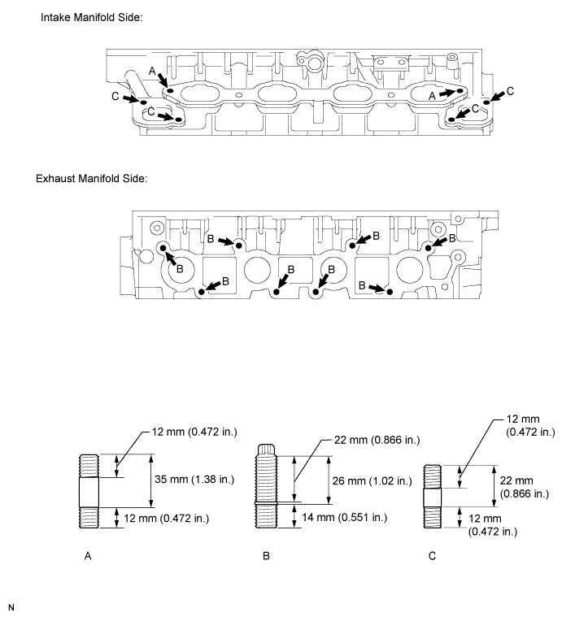
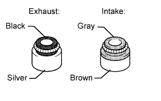
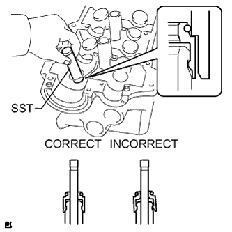
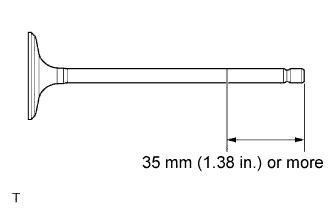
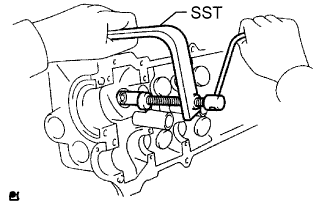
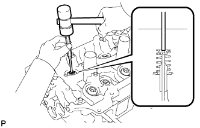
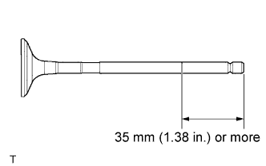
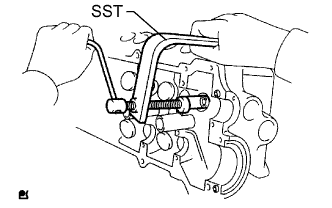
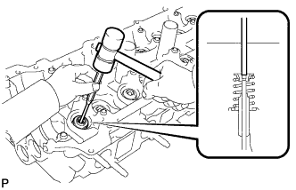

CYLINDER HEAD > REASSEMBLY |
| 1. INSTALL STUD BOLT |
Using an E10 "TORX" socket wrench, install the stud bolts A, B and C.

| 2. INSTALL NO. 1 STRAIGHT SCREW PLUG |
 |
Using a 14 mm hexagon wrench, install 2 new gaskets and the 2 straight screw plugs.
| 3. INSTALL VALVE SPRING SEAT |
Install the valve spring seats to the cylinder head.
| 4. INSTALL VALVE STEM OIL SEAL |
 |
Apply a light coat of engine oil to a new stem oil seal.
 |
Using SST, push in the oil seal.
| 5. INSTALL INTAKE VALVE |
 |
Apply plenty of engine oil to the tip area of the intake valve shown in the illustration.
Install the valve, inner compression spring and spring retainer to the cylinder head.
 |
Using SST, compress the compression spring and place the 2 spring retainer locks around the valve stem.
 |
Using a plastic-faced hammer and 5 mm pin punch, lightly tap the valve stem tip to ensure a proper fit.
| 6. INSTALL EXHAUST VALVE |
 |
Apply plenty of engine oil to the tip area of the exhaust valve shown in the illustration.
Install the valve, inner compression spring and spring retainer to the cylinder head.
 |
Using SST, compress the compression spring and place the 2 spring retainer locks around the valve stem.
 |
Using a plastic-faced hammer and 5 mm pin punch, lightly tap the valve stem tip to ensure a proper fit.